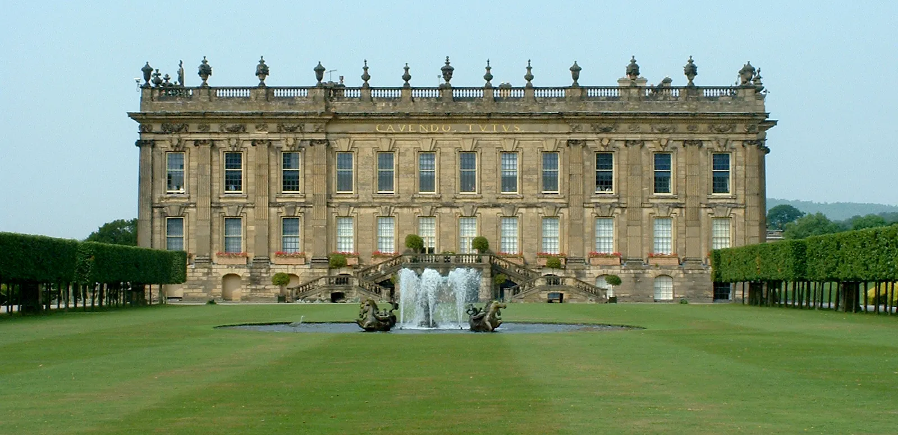
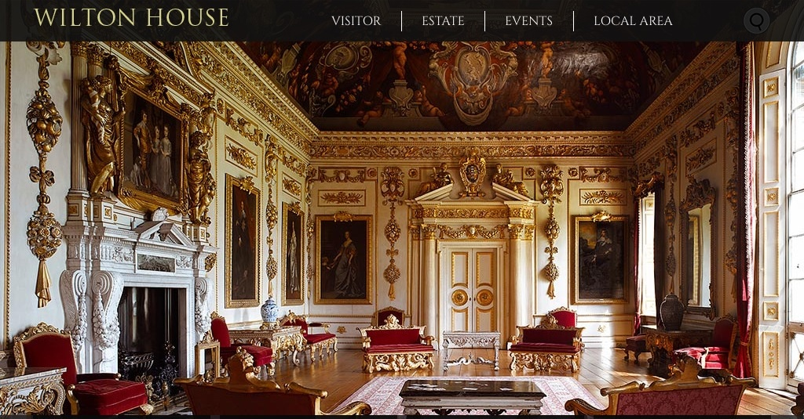
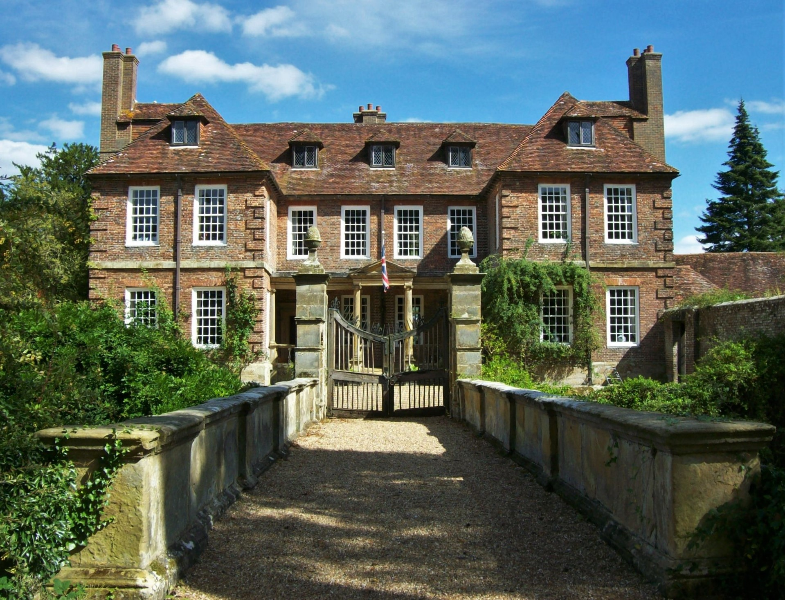
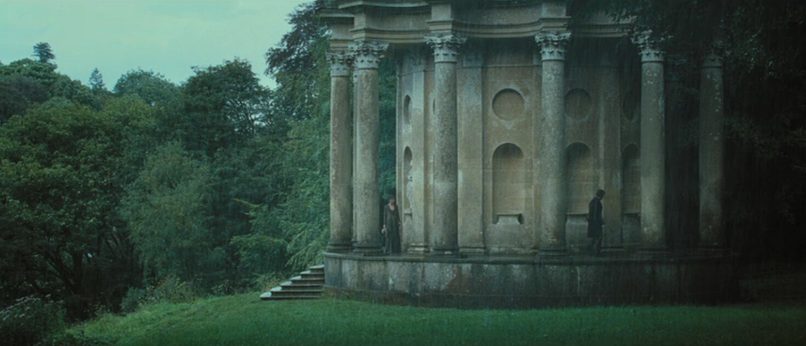
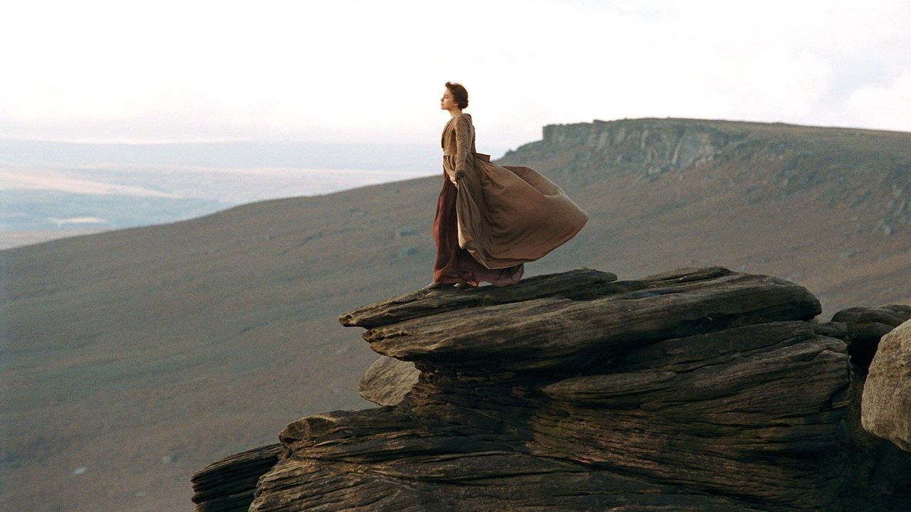

Location 01
Pemberley Exteriors & Sculpture Gallery: Chatsworth House
Believed to be Jane Austen's original inspiration for Pemberley, Chatsworth House in Derbyshire served as the grand exterior and the stunning sculpture gallery where Elizabeth gazes upon Mr. Darcy's bust.
Find on Map
Location 02
Pemberley Drawing Room: Wilton House
While Chatsworth provided the exterior, the lavish Double Cube Room at Wilton House in Salisbury was used for the interior drawing room scenes at Pemberley, where Elizabeth meets Georgiana Darcy.
Find on Map
Location 03
Longbourn (The Bennet Home): Groombridge Place
The moated 17th-century manor of Groombridge Place in Kent perfectly captured the chaotic, lived-in warmth of the Bennet family home. Fans will recognize the courtyard and the surrounding lush gardens.
Find on MapLocation 04
Netherfield (Mr. Bingley's House): Basildon Park
The grand Palladian mansion of Basildon Park in Berkshire served as the opulent Netherfield. It was here that the famous Netherfield Ball took place, and where Jane recovered from her illness.
Find on Map
Location 05
Rosings Park: Burghley House
The intimidatingly grand estate of Lady Catherine de Bourgh was filmed at Burghley House in Lincolnshire. The sheer scale and elaborate architecture perfectly emphasize the wealth and strict social hierarchy of the era.
Find on Map
Location 06
The First Proposal: Stourhead Garden
One of the most iconic scenes in the film takes place in the pouring rain. Mr. Darcy's dramatic first proposal to Elizabeth was filmed at the breathtaking Temple of Apollo, overlooking the lake at Stourhead Garden in Wiltshire.
Find on Map
Location 07
The Peak District & Stanage Edge
When Elizabeth journeys to Derbyshire with the Gardiners, she stands atop a dramatic rocky cliff with the wind blowing in her hair. This unforgettable, breathtaking vista is Stanage Edge in the Peak District.
Find on Map